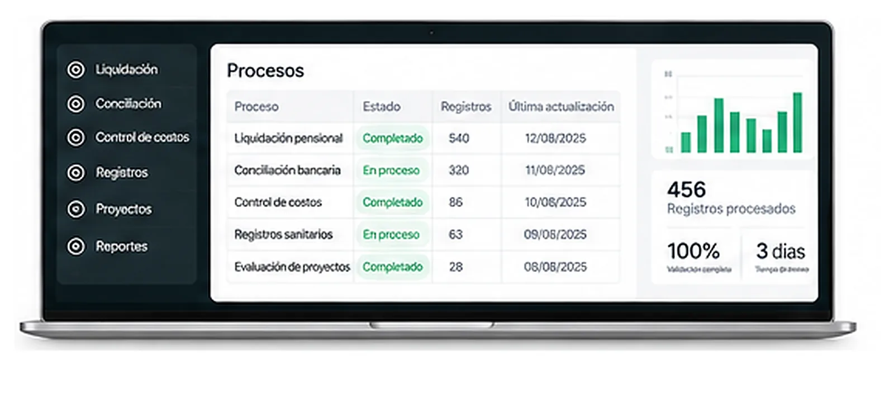

02 · ASÍ PODRÍA ENCONTRARSE TU CLIENTEVETCARE
Ideas · Procesos · Resultados
Tu negocio tiene un objetivo.
Yo diseño el camino para llegar a él.
Diseño y construyo experiencias digitales para que tus clientes sepan qué hacer, lleguen a una solución y tu negocio reciba el contexto necesario para continuar. Comprar, reservar, pedir, solicitar o agendar: diseño el camino completo.
Entender→Detectar→Diseñar→Construir→Mejorar
UN NEGOCIO · UN RECORRIDO
CANALES
Instagram ◎
WhatsApp ◌
Página web ⌂
QR / punto físico ⌁
→
EXPERIENCIA
Tu negocio•••
¿Cómo podemos ayudarte?
Quiero comprar →
Quiero agendar →
Necesito información →
● Cliente en camino
→
PROCESO
01
CapturarLa información necesaria
02
ConectarCon personas y sistemas
03
ContinuarCon contexto y seguimiento
→
RESULTADO
✓
Listo para actuarEl cliente resuelve.
El negocio recibe.
NUEVO INGRESO● conectado
D
Daniel CárdenasAgendó una cita · Información completa
ConfirmadoConecto los puntos de contacto, la experiencia y los procesos para que el recorrido termine en un resultado real.
MÍRALO ANTES DE QUE TE LO EXPLIQUE
No te voy a pedir que imagines lo que hago.
Elige un negocio y mira primero una página web. Después te mostraremos qué cambia cuando diseñamos la experiencia completa que vive su cliente.
01
Primero lo ves.Después lo pruebas. Y al final ves qué recibe el negocio.
01
Elige el ejemplo que más se parezca a tu negocio.Cada uno termina en una solución distinta: una cita, un pedido, una visita o una asesoría lista para continuar.
02
Ahora mira cómo empieza.La página aparece primero. No tienes que decidir nada todavía.
LA OTRA MITAD
La experiencia no termina cuando el cliente consigue lo que necesita.
Detrás de ese resultado, el negocio recibe la información necesaria para continuar: una cita, un pedido, una oportunidad o un caso listo para atender.
04 · LA OTRA MITAD
Ahora mira lo que recibes tú.
El cliente ya vivió la experiencia arriba. Aquí solo mostramos cómo esa interacción se convierte en un registro breve y útil para el negocio.
LO QUE RECIBES TÚ
REGISTRO LISTO PARA OPERARVETCARE
Termina el recorrido para ver el registro que recibe el negocio.
SIN RECONSTRUIR LA CONVERSACIÓN
Una experiencia sencilla para quien llega. Contexto útil para quien tiene que actuar.
El recorrido convierte las decisiones de la persona en contexto útil para el negocio.
05 · AHORA HAZLO CON TU NEGOCIO
Agendar una conversación ↗¿Qué debería ser más fácil para tus clientes?
Cuéntame qué quieres que puedan hacer y diseñamos el camino para conseguirlo.
02 · Casos reales
Lo que hice para que un negocio funcionara mejor.
Las interfaces son la prueba. El beneficio para el negocio es la historia.
03 · Prototipos interactivos
Después de vivir uno, puedes explorar otros.
Los prototipos sirven para probar un recorrido antes de convertirlo en una solución completa.
04 · Sistemas internos
Lo que la persona no ve también tiene que funcionar.
Cuando el recorrido entra al negocio, la información tiene que llegar organizada, con contexto y en el momento correcto. Ahí aparecen los sistemas internos.
01 · Captura02 · Organiza03 · Conecta04 · Ejecuta05 · Registra
Ver sistemas internos ↗
05 · Cómo trabajamos
El recorrido también existe para construir.
Entender
Objetivo, contexto y funcionamiento actual.
Detectar
Fricciones, decisiones y oportunidades.
Diseñar
La experiencia que debería poder vivir la persona.
Construir
Las piezas y sistemas que la hacen posible.
Mejorar
Medir, aprender y ajustar.
Daniel Cárdenas
06 · Sobre mí
Entiendo el negocio. Diseño el recorrido. Construyo la solución.
Soy Administrador de Empresas y Especialista en Alta Gerencia. Mi trabajo parte de una pregunta sencilla: ¿qué está haciendo más difícil de lo necesario la relación entre un negocio y las personas que interactúan con él?
Analizo cómo funciona realmente el negocio, dónde aparecen las fricciones y qué debería ocurrir para que una persona pueda entender, elegir, solicitar, comprar, agendar o avanzar sin obstáculos innecesarios.
“La tecnología es el medio.
El problema del negocio es el punto de partida.”
07 · Ahora tu recorrido
¿Te gustaría algo parecido para tu negocio?
Cuéntame en pocas palabras a qué te dedicas y qué quieres mejorar. Reviso tu caso y te contacto directamente.
01
Empecemos.Elige la opción que más se ajuste.
¿Quieres algo parecido?
TU NEGOCIO
Cuéntame a qué te dedicas.
No necesitas tener la solución clara. Cuéntame qué haces y qué te gustaría mejorar.
EL RECORRIDO
¿Qué te gustaría hacer más fácil para tus clientes?
TU PREGUNTA
¿Qué quieres preguntarme?
CASI LISTO
Perfecto. Déjame tus datos.
Así puedo revisar tu caso y contactarte con contexto.
SI QUIERES CONVERSAR
¿Qué día y hora te gustaría?
La hora queda pendiente de confirmación. Yo revisaré tu solicitud y te confirmaré directamente.
✓
SOLICITUD RECIBIDA
Perfecto. Tenemos tu caso.
Recibí tu contexto y tu solicitud de horario. Voy a revisarlo y te confirmaré directamente.
Te llevaré a WhatsApp para que la solicitud llegue con todo el contexto.